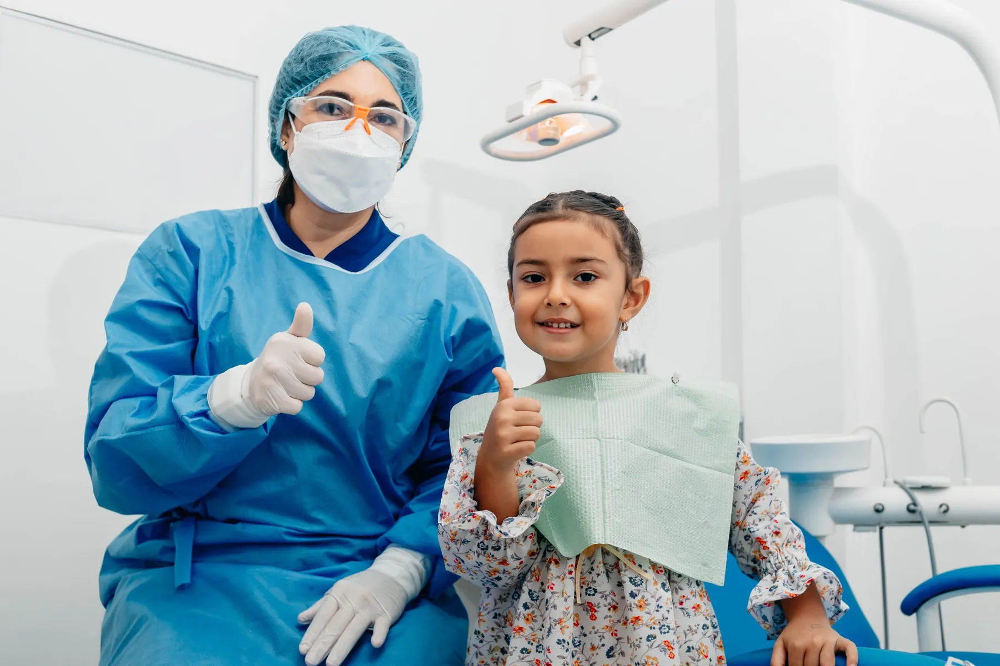
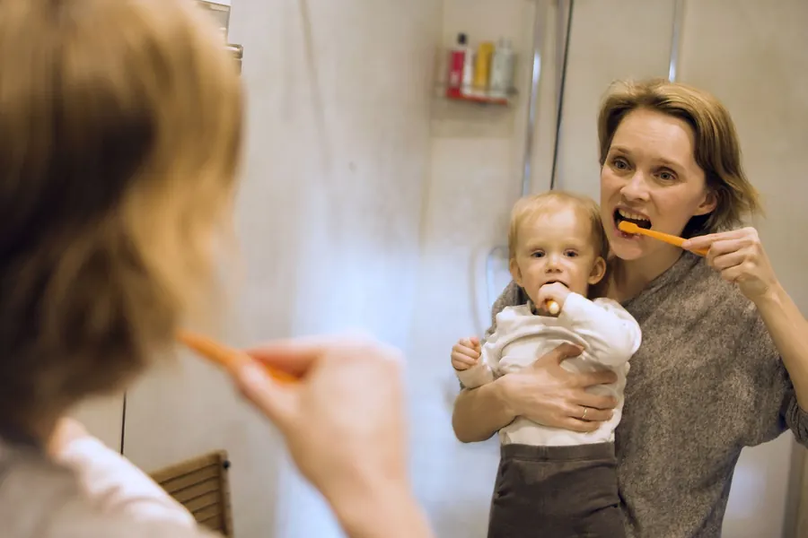
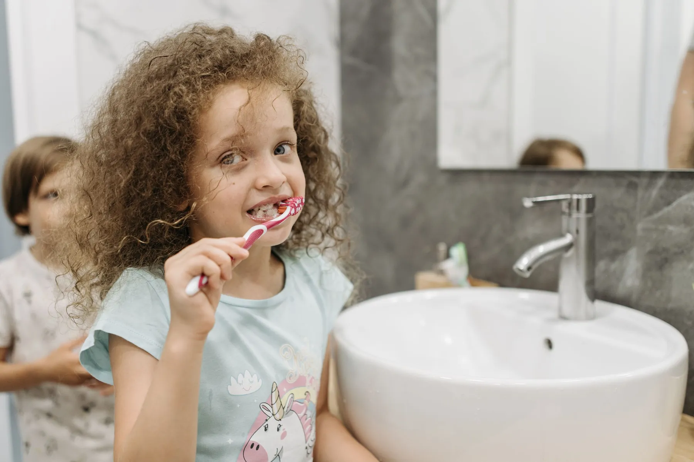
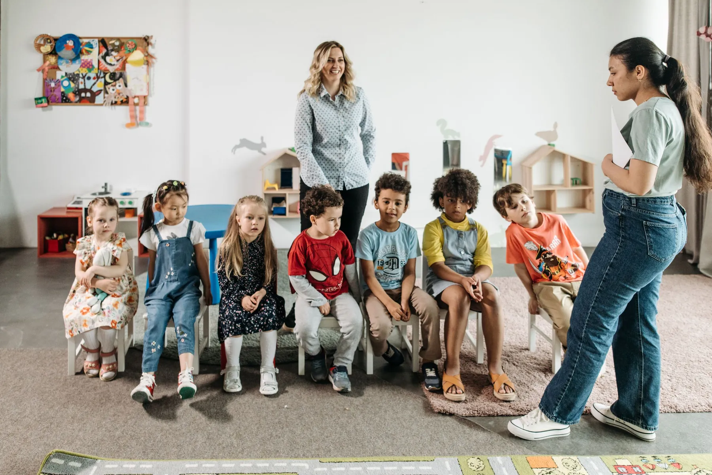
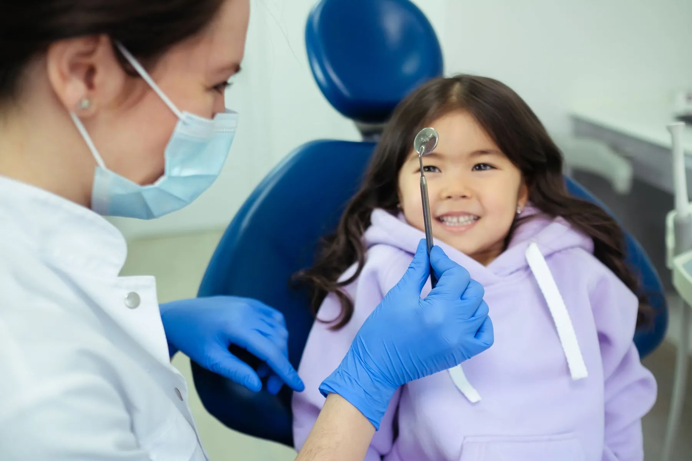
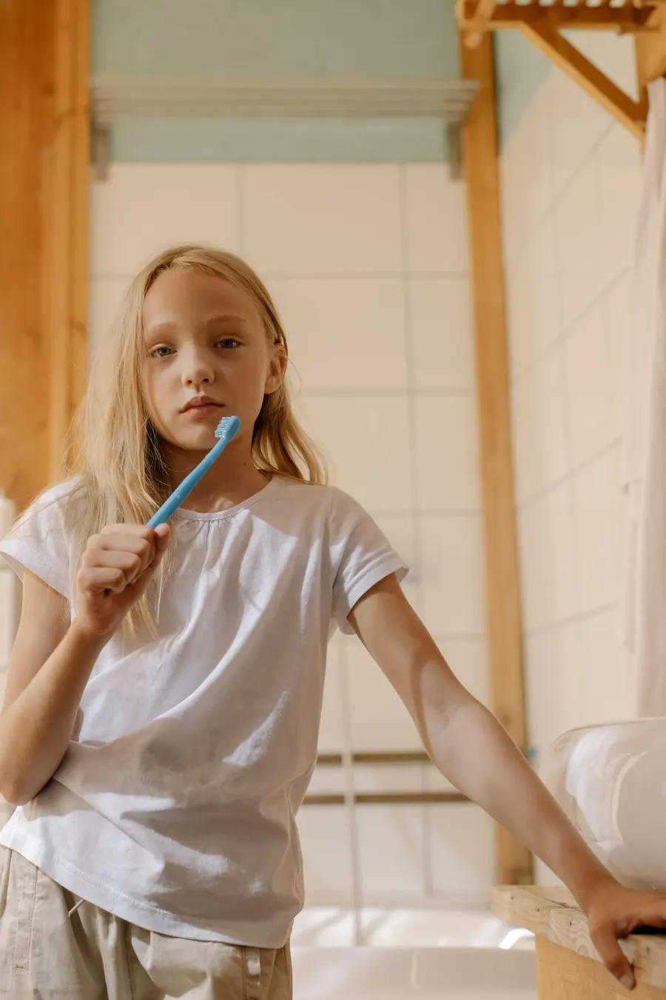

Küçük dişler,
büyük özen.
Uzm. Dt. Selin Bilgin Özdemir ve Dt. Oğuzhan Özdemir. Yaşa göre veli rehberi, kardeşler için tek randevu notu, kreş ve okullar için ziyaret talebi.
Çocuk diş hekimliğinde ilk iş tedavi değil, güven: koltuğa oturmadan önce tanışmak, aleti görmek, soruyu sormak.


Koltuk, ışık,
tanışma.
Bu bölümde kliniğinizin çocuk için nasıl hazırlandığı anlatılır: bekleme alanı, ilk ziyarette neler olduğu. Ayrıntıları sizden alırız; uydurma bir cümle yazmayız.

Fırça, ayna,
alışkanlık.
Veli rehberi evde yapılacakları yaşa göre anlatır. Instagram'daki bilgilendirme paylaşımlarınız burada kalıcı bir arşive dönüşür.

Sınıfça
ziyaret.
Paylaşımlarınızda anaokulu öğrencilerinin kliniği ziyaret ettiği günler var. Kreş ve okul yöneticileri aşağıdaki talep masasından size doğrudan yazar.
Çocuğunuz kaç yaşında?
Yaşı seçin: evde yapılacaklar ve muayenede sorabileceğiniz sorular değişsin.

Genel bilgilendirmedir; her çocuğun ağız yapısı farklıdır, değerlendirme muayenede yapılır. Metinleri yayından önce siz onaylarsınız.

Dişleri saymak,
bir oyun olabilir.
Kardeşler dahil, tek not.
Seçtikçe sağdaki not yazılır; WhatsApp'tan gönderdiğinizde klinik uygun gün ve saati size döner.

Sınıfınızla gelin.
Okul yöneticisi birkaç seçimle talebini hazırlar; klinik uygun tarihi ve ziyaretin içeriğini kendisi söyler.
Ziyaret talebini gönderKlinikten kareler.




Denipol Hastanesi'nin arkasında.
- Adres
- 29 Ekim Bulvarı, 424 Sk. No:62/C, Merkezefendi / Denizli
- Telefon / WhatsApp
- 0538 418 22 71
- Çalışma saatleri
- Sizden alınıp eklenecek